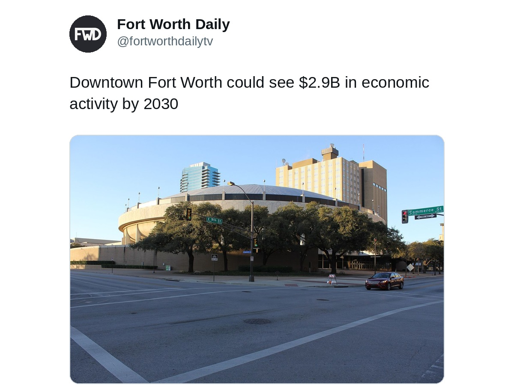

FWD
Fort Worth Daily
Just now · 🌎 · community · template writer
Just now · 🌎 · community · template writer
Convention center upgrades, new hotels, Texas A&M’s planned campus and other major developments are expected to drive downtown growth.

FWD
story + scoring
{
"source": "Fort Worth Report",
"kind": "rss",
"score": 1.1523,
"relevance": 2,
"url": "https://fortworthreport.org/2026/11/28/downtown-fort-worth-could-see-2-9b-in-economic-activity-by-2030/",
"image_license": "wikimedia-cc",
"image_credit": "Photo: Nicolas Henderson from Coppell, Texas via Wikimedia Commons (CC BY 2.0)"
}